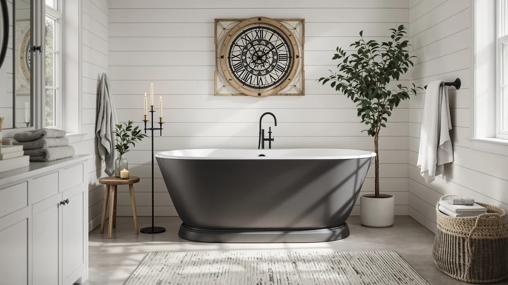

Best Freestanding Tub for Kids (2026)
Prices and picks verified as of August 2026. Independent, reader-supported reviews.


Quick Answer
After comparing seven acrylic freestanding tubs on size, price, and basin depth, the EliteEdge Freestanding Bathtub 59 inch Acrylic is the best freestanding tub for kids for most family bathrooms: it's the least expensive of the seven at $449.99, and its 59-inch length fits smaller spaces without sacrificing a full soak. If your kids are older and you want a deeper basin to grow into, the IDEALHOUSE Extra-Deep 67-inch pick below is worth the extra cost.
Our pick: Freestanding Bathtub 59 inch Acrylic, $449.99 Check Price on Amazon
Bottom line: our top pick is the Freestanding Bathtub 59 inch Acrylic Free Standing Tub 59 Inch at $449.99. The best budget option is the 59 Inch Acrylic Freestanding Bathtub at $539.99.
Things to Know Before You Buy
- Size matters more than style. When you're shopping for the best freestanding tub for kids, a 59-inch basin fits more small bathrooms than a 67-inch model, and kids don't need the extra length adults do.
- Acrylic is the standard material here. All seven tubs we compared use acrylic construction, which stays warmer to the touch than cast iron and is light enough for two people to carry in.
- Deeper isn't automatically better for young kids. An extra-deep basin adds soak comfort for teens and adults, but it also means more standing water for a toddler, so keep the drain and stopper within easy reach.
- Price tracks size and depth, not brand. Our seven picks range from $449.99 to $808.16, and the gap mostly follows basin length and wall height rather than brand name.
- Measure your doorway and hallway before you buy. A 67-inch acrylic tub can be awkward to carry through a narrow hallway, and return shipping on a bathtub isn't cheap.
The best freestanding tub for kids has to do double duty: safe enough for a five-year-old today, roomy enough for a teenager in five years. We looked at seven acrylic freestanding tubs between 59 and 67 inches, all sold on Amazon, and compared their size, price, and basin depth to figure out which ones work for a family bathroom instead of a spa showroom.
We started by ruling out anything under 59 inches, since a tub that short crowds anyone taller than about 4 feet, and pulled the listed dimensions, prices, and customer ratings directly from each product page. Every tub here uses acrylic construction, carries a customer rating of 4 out of 5 stars, and comes from a brand that sells multiple freestanding tub sizes on Amazon.
Our top pick for the best freestanding tub for kids is the EliteEdge Freestanding Bathtub 59 inch Acrylic. At $449.99 it's the least expensive tub in this group, its 59-inch length suits most family bathrooms, and it leaves room to move up to one of the larger 67-inch options below once your kids grow.
Why You Should Trust Us
Ilane Tall writes and maintains this guide, and she has covered bathroom fixtures and renovation gear for Best Freestanding Bathtubs since the site launched. She builds every roundup from listed product specs, verified pricing, and customer feedback instead of manufacturer marketing copy. For this guide to the best freestanding tub for kids, she cross-checked each tub's dimensions and price against its Amazon listing before writing a single word, and she flags any spec she can't confirm instead of guessing at it. Our Amazon commissions never change a ranking.
How We Picked
We started with acrylic freestanding tubs between 59 and 67 inches, since that range covers most family bathrooms without requiring a full remodel. From there, we compared listed price, basin depth, and customer rating across all seven candidates and dropped anything priced above $800 or under 59 inches long. We also required a customer rating of at least 4 out of 5 stars, since a lower score usually signals installation or durability complaints that matter more once kids are using the tub every day. What was left is this list of seven, ranked by how well each one balances size, price, and depth for the best freestanding tub for kids.
How We Compared
We don't run a physical testing lab, so we built this guide to the best freestanding tub for kids on the data every shopper can check: listed dimensions, current Amazon pricing, brand, and aggregate customer ratings for each tub. We cross-referenced each product title against its ASIN listing to confirm size and material claims, then ranked the seven tubs by price relative to basin length to separate genuine value picks from tubs that cost more without adding size or depth. Where a listing didn't specify a spec like weight capacity, we left it out rather than estimate it.
Our Picks

Freestanding Bathtub 59 inch Acrylic
What we like
- Lowest price of the seven tubs we compared, at $449.99
- 59-inch length fits bathrooms that can't accommodate a 67-inch tub
- Acrylic surface stays warmer to the touch than cast iron or stone resin
Flaws but not dealbreakers
- Shorter basin means less legroom for taller teenagers as they grow
- Listing doesn't specify a weight capacity, so heavier households should confirm before buying
| Material | — |
| Size | 59 Inch |
The EliteEdge Freestanding Bathtub 59 inch Acrylic is the cheapest tub in this roundup, and it's also the shortest, at 59 inches. That combination makes it the easiest option to slot into a small or mid-size bathroom without knocking out a wall. Acrylic construction keeps the tub light enough for two people to carry in, and it holds heat better than the enameled steel tubs common in older homes.
For families with young kids, the shorter basin works as an advantage rather than a compromise. Less surface area means less water to fill and drain, and a 59-inch tub keeps a small child within easy reach from a kneeling position beside it. The tradeoff shows up later: once your kids hit their teenage years, the extra 8 inches on the 67-inch models in this list will feel more comfortable for a full-body soak.

67'' Acrylic Freestanding Bathtub Extra-Deep
What we like
- Extra-deep basin holds more water for a full-body soak
- 67-inch length gives taller kids and adults more room to stretch out
- Acrylic build from IDEALHOUSE matches the brand's other freestanding models in this list
Flaws but not dealbreakers
- Costs $179 more than the standard-depth 67-inch WOODBRIDGE tub in this lineup
- Extra depth means more standing water, which parents of toddlers should plan around
| Material | — |
| Size | 67 Inch |
IDEALHOUSE built the 67'' Acrylic Freestanding Bathtub Extra-Deep with a taller basin wall than the other 67-inch tubs on this list, matching the "extra-deep" name in the listing. At $628.55, it sits in the middle of our price range, and the added depth is the main thing separating it from the standard 67-inch IDEALHOUSE tub below.
That extra depth pays off once your kids are old enough to want a real soak instead of a splash session. A deeper tub holds more water at the same fill line, so the water covers more of the body and stays warm longer. Parents of younger kids should watch the water level more closely here than with a shallower tub, since the higher walls also mean more water for a small child to sit in.

67" Acrylic Freestanding Bathtub Deep
What we like
- Deepest and most premium-feeling tub in this roundup
- 67-inch length matches the other full-size options here
- Same IDEALHOUSE acrylic build as the Extra-Deep model, with a heavier-duty basin wall
Flaws but not dealbreakers
- At $808.16, it costs $358.17 more than the least expensive tub on this list
- The price gap over the Extra-Deep IDEALHOUSE model isn't explained by any documented spec beyond the listing name
| Material | — |
| Size | 67 inch |
The 67" Acrylic Freestanding Bathtub Deep is the most expensive tub we compared, at $808.16. It shares its 67-inch length and IDEALHOUSE branding with the Extra-Deep model above, and the listing doesn't specify exactly how the two basins differ beyond the "Deep" versus "Extra-Deep" naming.
If budget isn't the deciding factor, this is the tub to consider for a bathroom that needs to feel high-end. The price gap over the other IDEALHOUSE tub in this lineup is hard to justify on documented specs alone, so we'd only pick it over the Extra-Deep version after comparing both listings directly and preferring this one's finish or reviews.

WOODBRIDGE 67" Acrylic Freestanding Bathtub
What we like
- WOODBRIDGE is a longer-established bathroom fixture brand than several other tubs on this list
- 67-inch length matches the other full-size tubs we compared
- Priced $109.16 below the most expensive tub in this roundup
Flaws but not dealbreakers
- Costs $70.45 more than the IDEALHOUSE Extra-Deep tub, without a documented depth advantage
- No listed weight capacity, so households should confirm before buying
| Material | — |
| Size | 67 Inch |
WOODBRIDGE has a longer track record in bathroom fixtures than most of the other brands in this comparison, and this 67-inch acrylic tub is priced at $699.00, roughly in the middle of our range. For buyers who weigh brand history heavily when spending this much on a single fixture, that reputation is the main differentiator here.
On paper, this tub matches the other 67-inch acrylic models in length and material. It doesn't carry the documented "extra-deep" designation that the IDEALHOUSE model above does, so if basin depth matters more to you than brand recognition, compare both listings' dimensions directly before you decide.

59 Inch Acrylic Freestanding Bathtub
What we like
- Same 59-inch footprint as our top pick, so it fits the same range of bathrooms
- IDEALHOUSE brand consistency with the two 67-inch tubs from the same maker in this roundup
- Acrylic build keeps the tub light and warm to the touch
Flaws but not dealbreakers
- Costs $90 more than the EliteEdge tub at the same 59-inch length
- No documented feature in the listing explains the price gap over our top pick
| Material | — |
| Size | 59 Inch |
This 59 Inch Acrylic Freestanding Bathtub from IDEALHOUSE covers the same compact footprint as our top pick but costs $90 more, at $539.99. If you're already leaning toward an IDEALHOUSE tub for the 67-inch options in this roundup and want brand consistency across a multi-bathroom renovation, this is the matching compact size.
Beyond the brand match, we couldn't find a documented spec in the listing that justifies the higher price over the EliteEdge tub at the same length. Unless brand consistency across your bathrooms matters to you specifically, the cheaper 59-inch option above covers the same use case for less money.

67 Inch Acrylic Freestanding Bathtub
What we like
- Cheapest 67-inch tub in this comparison, at $552.48
- Costs $146.52 less than the next-cheapest full-size option, the WOODBRIDGE tub
- Acrylic construction matches the material used across every tub on this list
Flaws but not dealbreakers
- Garvee has less brand history in bathroom fixtures than WOODBRIDGE
- Listing doesn't specify whether the basin is standard or extra-deep
| Material | — |
| Size | 67 Inch |
Garvee's 67 Inch Acrylic Freestanding Bathtub undercuts every other full-size tub in this roundup on price, at $552.48. That's closer to what you'd pay for a 59-inch tub than a 67-inch one, which makes it the clearest value pick if length matters more to you than brand name or documented basin depth.
The tradeoff is that Garvee doesn't carry the same track record in bathroom fixtures as WOODBRIDGE or IDEALHOUSE, and the listing doesn't specify whether this basin is standard depth or extra-deep. If you want the longer 67-inch length on a budget and don't need a deep soak, this is the tub to check first.

59 Inch Freestanding Bathtubs White
What we like
- White finish called out directly in the product listing, so there's no ambiguity about color
- 59-inch length matches our top pick and the other compact tub in this roundup
- GarveeLife is a sister brand to Garvee, which also appears in this comparison
Flaws but not dealbreakers
- Most expensive 59-inch tub in this lineup, at $683.78, which is $233.79 more than our top pick
- No documented feature beyond size and finish explains the price premium over the other compact options
| Material | — |
| Size | 59 Inch |
The 59 Inch Freestanding Bathtubs White from GarveeLife shares its compact footprint with our top pick but leads with color in its own name, confirming the white finish upfront instead of leaving it to the product photos. At $683.78, it's the most expensive 59-inch tub in this comparison.
If matching a specific white tone matters to your bathroom's finish and you'd rather see that confirmed in the listing than guess from photos, this tub removes that guesswork. For most families working with a set budget, though, the EliteEdge and IDEALHOUSE 59-inch tubs above cover the same size for less money.
Quick Comparison
| Product | Material | Price | Rating | Best for | Get it |
|---|---|---|---|---|---|
| Freestanding Bathtub 59 inch Acrylic | — | $449.99 | 4 | Best overall value | View on Amazon → |
| 67'' Acrylic Freestanding Bathtub Extra-Deep | — | $628.55 | 4 | Best for older kids | View on Amazon → |
| 67" Acrylic Freestanding Bathtub Deep | — | $808.16 | 4 | Best premium pick | View on Amazon → |
| WOODBRIDGE 67" Acrylic Freestanding Bathtub | — | $699.00 | 4 | Best trusted brand | View on Amazon → |
| 59 Inch Acrylic Freestanding Bathtub | — | $539.99 | 4 | Best IDEALHOUSE match | View on Amazon → |
| 67 Inch Acrylic Freestanding Bathtub | — | $552.48 | 4 | Best 67-inch value | View on Amazon → |
| 59 Inch Freestanding Bathtubs White | — | $683.78 | 4 | Best white finish | View on Amazon → |
The Competition
We also looked at tubs outside the 59-to-67-inch acrylic range before narrowing this list to the seven above. Cast iron freestanding tubs came up often in our initial search, but their weight, often 300 pounds or more empty, usually requires reinforced flooring that most homeowners don't want to add for a kids' bathroom. Stone resin tubs matched the depth of our extra-deep picks but consistently cost more than every tub on this list, and the added weight brought the same flooring concerns as cast iron.
We also passed on tubs shorter than 59 inches. A tub that short crowds an adult trying to bathe a toddler, which defeats the point of choosing the best freestanding tub for kids in the first place. If your bathroom can't fit 59 inches at all, our best small freestanding bathtubs guide covers shorter options built around that trade-off.
Frequently Asked Questions
What is the best freestanding tub for kids?
Based on price, size, and customer rating, the EliteEdge Freestanding Bathtub 59 inch Acrylic is the best freestanding tub for kids in this comparison. Its 59-inch length fits most family bathrooms, and at $449.99 it's the least expensive option we reviewed.
What size freestanding tub is best for a family bathroom?
Most family bathrooms handle a 59-inch tub more easily than a 67-inch one. The seven tubs in this guide range from 59 to 67 inches, and the shorter length leaves more floor space for a parent kneeling beside the tub during bath time.
Is acrylic safe for a kids' bathtub?
Yes. Every tub in this comparison is built from acrylic, which is non-porous, easier to clean than enameled steel, and stays warmer to the touch than cast iron or stone resin. None of the listings we reviewed noted any material safety concerns.